惠州欧美城——古罗马巴洛克建筑风格

巴洛克风格的建筑富丽堂皇，十分符合当时天主教会炫耀财富和追求
神秘感的要求。因此，巴洛克建筑从罗马发端后，不久即传遍欧洲，以至远达美洲。
巴洛克艺术冲破了文艺复兴晚期古典主义者制定的种种清规戒律，反映了向往自由的
世俗思想。
惠州欧美城建筑主体复原了十七世纪古罗马巴洛克艺术风格的古城堡，
强烈的神秘气息诱人深入。胜利大门、胜利广场、天使音乐喷泉、天鹅湖畔、英雄壁、
金色飞狮……强调艺术形式的综合手段，重视建筑与雕刻、绘画的综合，在欧美城建筑群
周边随处可见栩栩如生的天使雕像群，古罗马将士铜像群，以及恢宏大气的罗马柱装饰
体，更吸收了文学、戏剧、音乐等领域里的一些因素和想象。超大面积的园林布局更彰显
其建筑主体的至尊华贵，整体规划融入了神秘的古罗马神话色彩，向世人讲述禁忌的一个
个神话故事。
胜利女神尼克
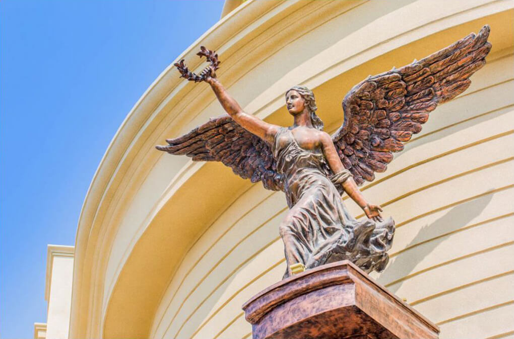
希腊神话中的胜利女神,是提坦神帕拉斯和誓言女神斯堤克斯的女儿,与智慧
女神雅典娜是表姐妹。她长着一对翅膀,身材健美,拥有惊人的速度。尽管她出身泰坦族，
但在泰坦战争中仍协助宙斯（奥林匹克神）战胜提坦巨人,给人们带来了胜利的希望。
猫头鹰
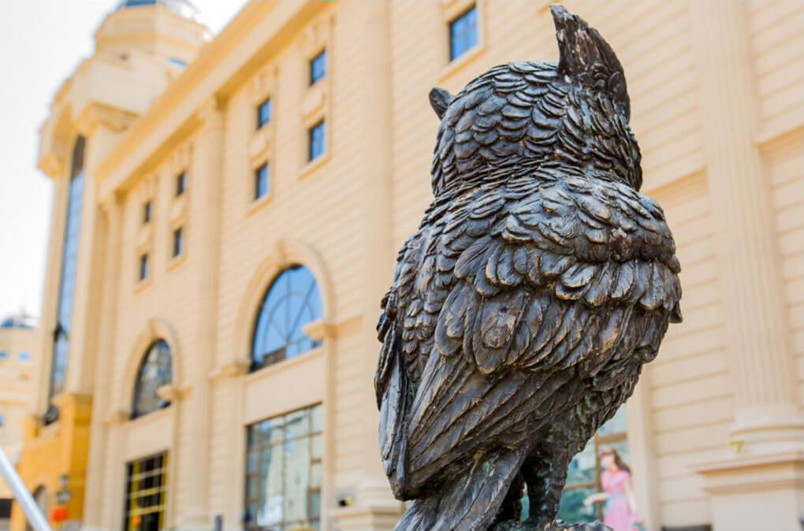
雅典娜的圣鸟。传说猫头鹰经常夜间外出为智慧女神雅典娜传递消息，而雅典
娜有时也会化身为猫头鹰外出打探消息，负责她消息来源的圣鸟猫头鹰也就成为了智慧与博学
的象征。
圣女贞德
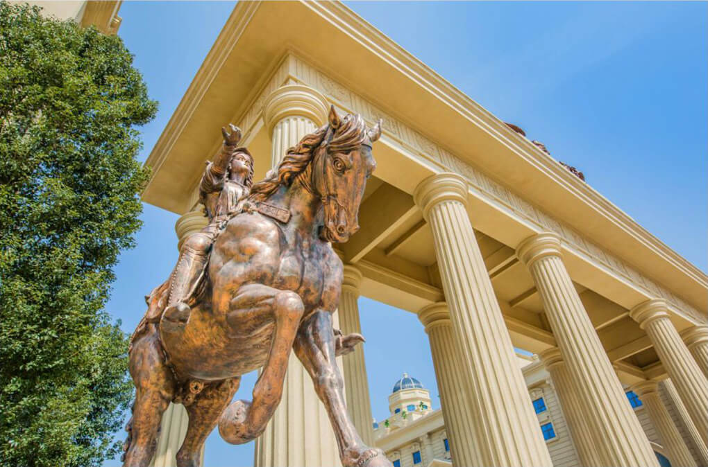
法国军事家，天主教圣人，法国人民心中的自由女神，历史上唯一能在17岁时
就指挥国家大军的少女。在英法百年战争中她带领法国军队对抗英军的入侵，支持法查理七世
加冕，为法国胜利做出了巨大贡献。
天使音乐喷泉
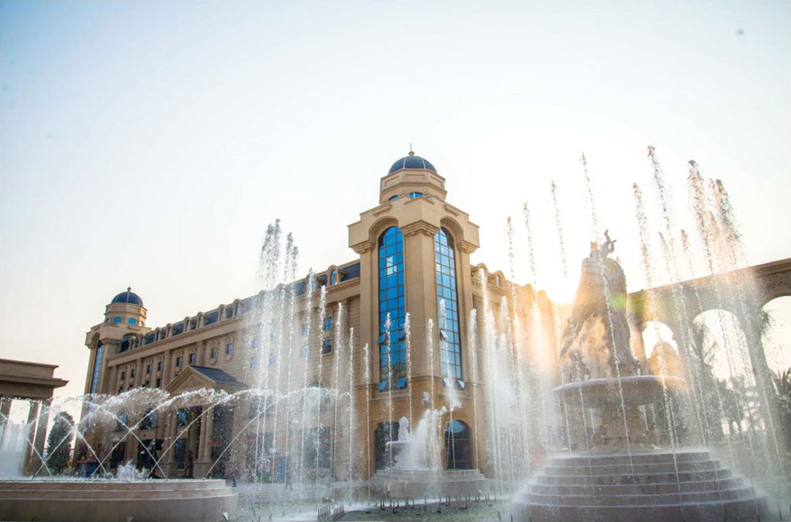
古希腊神话中，众神皆精通乐器。小天使们在母爱之神赫拉的教导与庇佑下，不仅
茁壮成长，还将乐器演奏得炉火纯青。他们多才多艺，演奏的乐曲美妙动听，正是天籁之音。整
个胜利广场天使音乐喷泉地面造型是“握拳比V”的胜利手势，寓意身处祥和幸福时代的生活颂歌。
天鹅湖畔
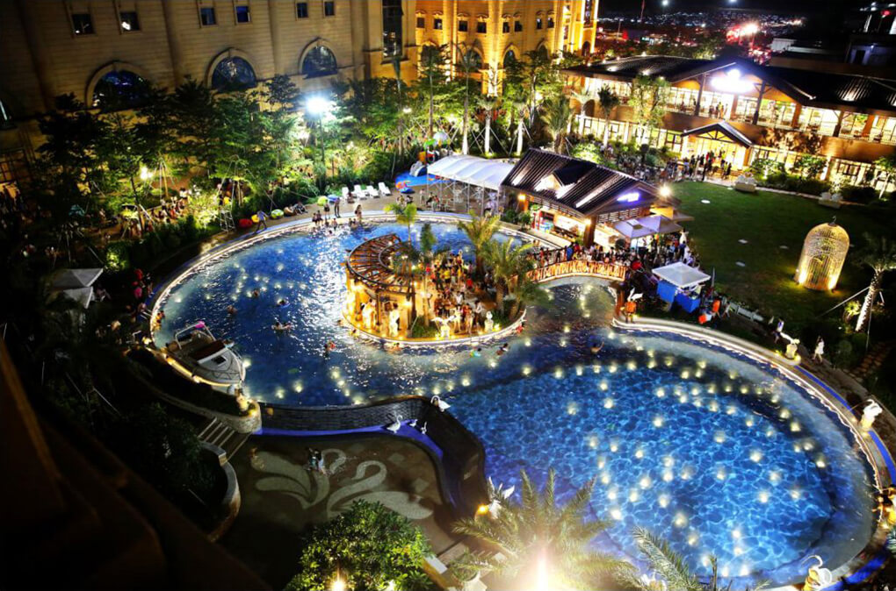
在希腊神话中，天鹅是宙斯的化身。传说宙斯为追求复仇女神将自己变成天鹅，并
命令爱神变成鹰追捕自己，以博取女神同情。经过一番曲折，终获美人心。宙斯为纪念此事，将天
鹅和鹰一同升上天空，成为了天鹅座和天鹰座。这里正是以天鹅星座的故事为原型，通过结合主题
与灯光效果，打造出一个以天鹅形态为亮点的天鹅泳池。在周边，你会看到六种不同形态的天鹅雕
像。而泳池底部的灯光更融入了十二星座倒影的设计理念。当夜幕降临，在俱乐部二层的观星台还
能观赏到耀眼的星空，眺望被“十二星座”簇拥的天鹅湖畔。
文森特·威廉·梵·高
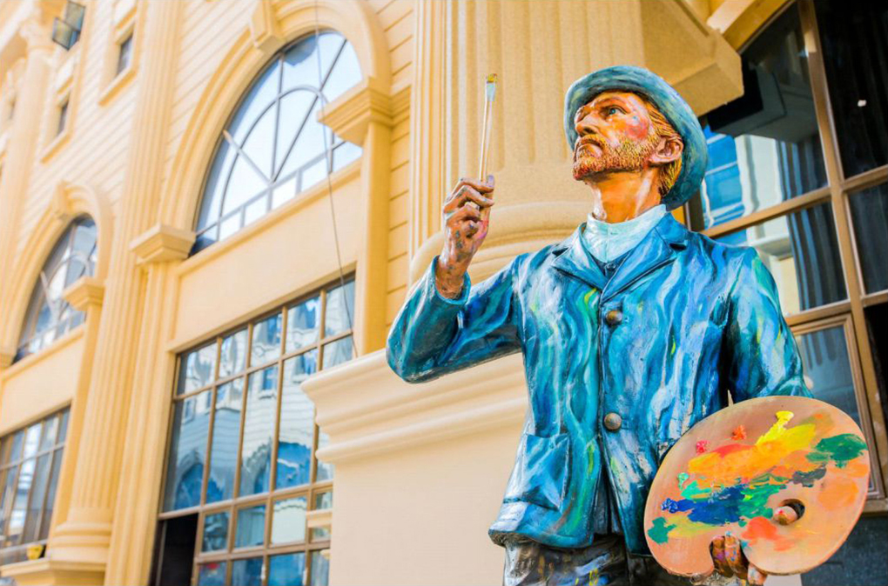
又称"凡高"，荷兰后印象派画家。代表作有《星月夜》、自画像系列、向日葵系列等。
出生于新教牧师家庭，是后印象主义的先驱，并深深地影响了二十世纪艺术，尤其是野兽派与表现主义。
路德维希·凡·贝多芬
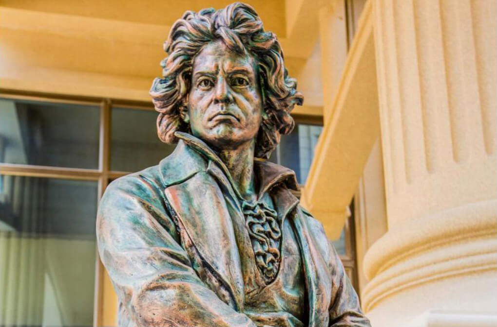
德国著名的音乐家，维也纳古典乐派代表人物之一。他的作品对世界音乐的发展有着非常深远
的影响，因此被尊称为“乐圣”。
挪威驯鹿
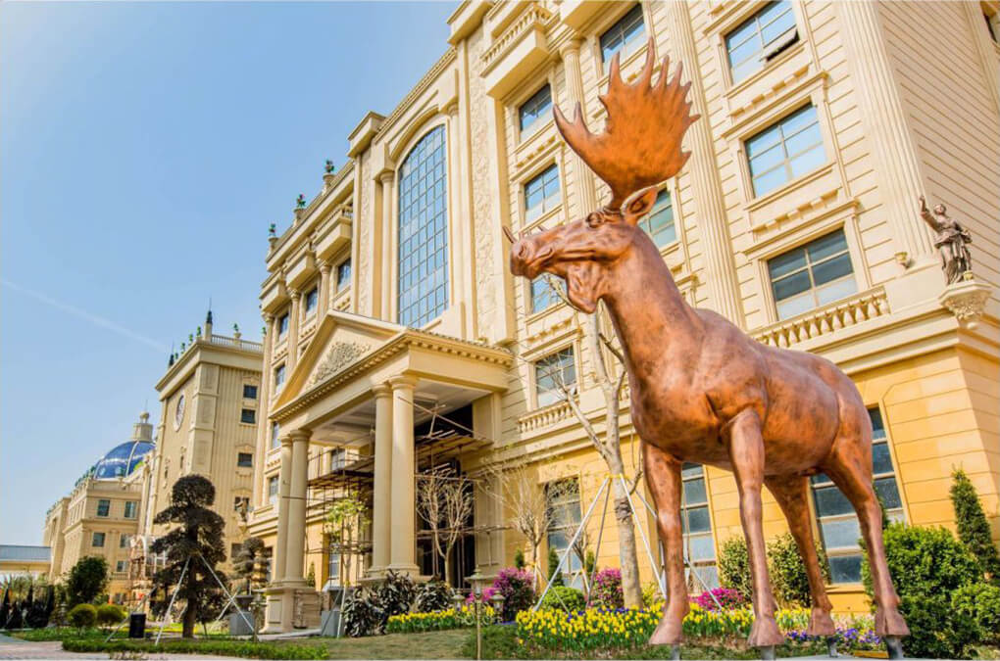
学名斯瓦尔巴德群岛驯鹿,是驯鹿的亚种之一。上体背部披毛褐色，有光泽。沉重的鹿角在7月
至9月会脱落。栖息于高地苔原、成熟的针叶林区。以各种植物为食，分布于挪威的斯瓦尔巴特群岛。2008年
被列入《世界自然保护联盟》（IUCN）濒危物种红色名录ver。
挪威国王奥拉夫与爱犬
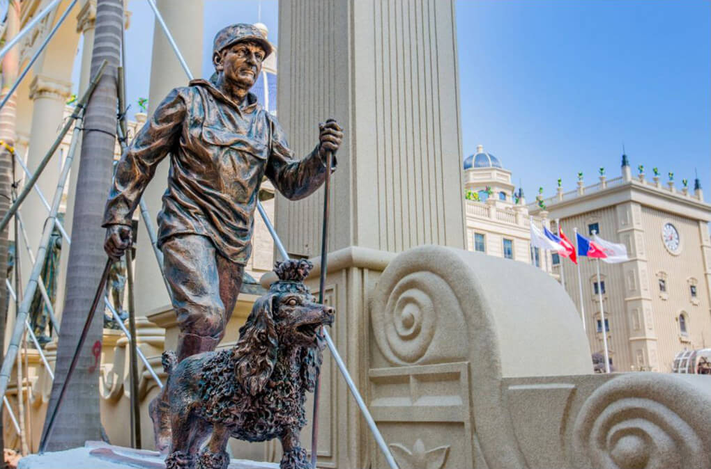
挪威地处欧洲北缘，三分之一的国土在北极圈内，每年有4个月的积雪期。因此，滑雪成为挪威
传统的运动文化。挪威老国王奥拉夫五世钟情于高台跳雪运动，经常攀上霍尔门科伦山。在山麓竖有一座“国王
奥拉夫五世与其爱犬”的雕像，这座雕像也成为奥斯陆的标志之一，因为它与挪威的滑雪文化密切相关。
海德堡猕猴
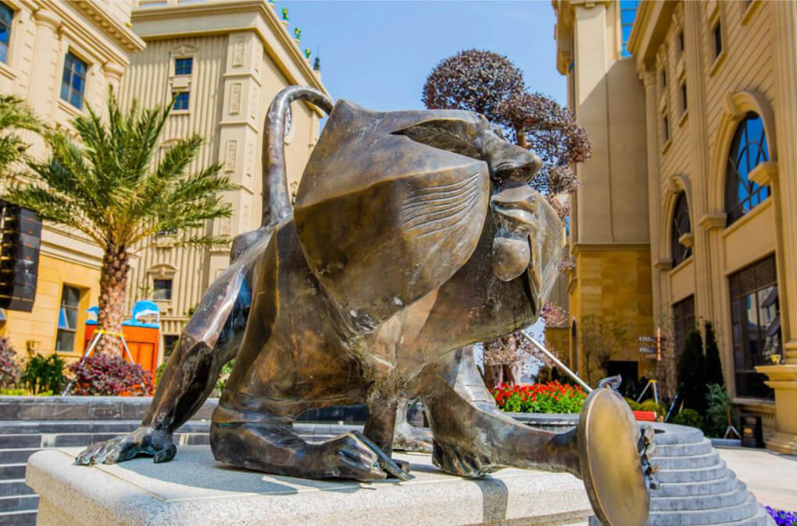
十七世纪时，在德国海德堡老桥桥头上经常有猴子出没，它们会很有礼貌地向路人致意。后来有
诗人用当地方言写道：“你为何在这里瞅着我，你是否没有见过老猕猴，你在海德堡四处转悠，肯定会看到我的
同类。”为了纪念这一历史故事，一位雕塑家在桥头旁边塑造了一个铜猴，铜猴手中拿着一面镜子，要过往行人
照照镜子，在猴子右手下的石阶上还有两只铜鼠。据说摸摸铜猴的手指，你就能梦想成真，摸摸它手中的镜子就
会带来财富，摸摸它旁边的小老鼠则可以多生孩子，保佑多子多孙。
英雄壁
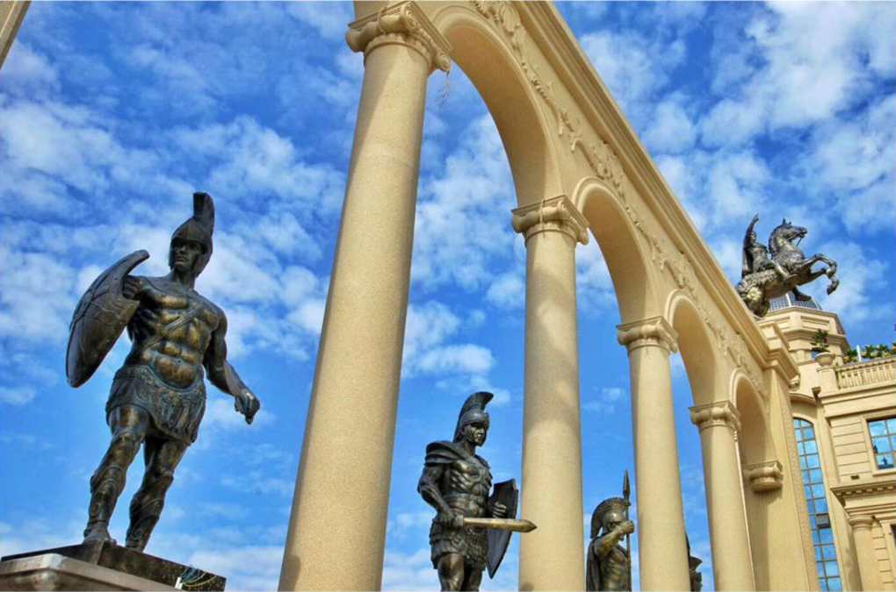
古罗马时期，以凯撒、斯巴达克斯等传奇英雄为代表的战绩显赫的将士军团。他们有勇有谋，战无
不胜，为民主和自由英勇奋斗，顽强而英勇的将士精神值得后人学习。迄今，他们这种精神仍守护在这片挚爱的
土地上。
金色飞狮-欧美城吉祥物
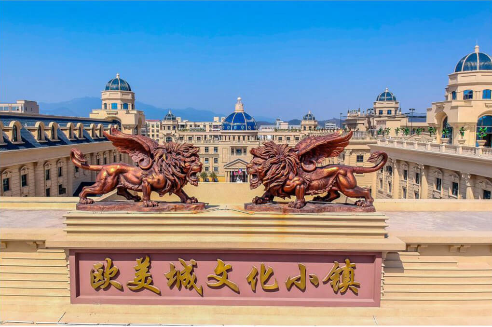
狮子一直是权威、力量及守护人们吉祥平安的象征，具有降魔驱邪、守卫宫殿、护家镇宅的作用。金色
飞狮正是欧美城的守护神、吉祥物，而欧美城的注册商标亦是两只威武的飞狮。其展翅飞翔的昂扬姿态寓意着蓬勃发展
的生命力，健硕有力的身姿饱含无穷力量，展翅的瞬间将排除万难，勇往直前。
格林兄弟
雅各布·格林和威廉·格林。他们是19世纪德国著名的童话搜集家、语言文化研究者。因他们兴趣相近，经历
相似，联手研究语言学、搜集和整理民间童话与传说，故称"格林兄弟"。他们一起整理了销量仅次于《圣经》的畅销德文作
品《格林童话》。
青蛙王子
——取自于《格林童话》故事
骄傲的公主把金球掉落井里，青蛙要求公主嫁给他作为帮忙找回球的回报。没想到公主却反悔，扔下青蛙
回宫了。青蛙追到宫里，国王信守诺言把公主嫁给青蛙。公主无奈之下亲吻了青蛙，青蛙竟变成了英俊的王子，从此和
公主幸福地生活在一起。
莴苣姑娘
——取自于《格林童话》故事
一对夫妻因偷了巫婆的莴苣受到了惩罚，他们刚出生的女儿被巫婆带走，关在塔楼里，这就是莴苣姑娘。每
次巫婆探望莴苣，都会让莴苣放下长发以便登塔。无意间路过塔楼的王子被莴苣美妙的歌声吸引，发现了巫婆登塔的秘密。
他用同样的方法见到了莴苣并爱上了她。巫婆知道后把莴苣扔在了没有人的森林，王子伤心欲绝，最后跳塔弄瞎了双眼。
几年后，四处流浪的王子竟与莴苣重逢，莴苣留下感慨的泪水，治好了王子，二人又过上了幸福的生活。
白雪公主
——取自于《格林童话》故事
肤白如雪的白雪公主是公认的世界上最美的女子，她的美貌引来了继母邪恶皇后的嫉妒，为躲避皇后的迫害，
她连夜逃到森林深处。在森林里，她遇到了七个小矮人，他们友好地接待了她，并给她提供了栖息之所。邪恶的皇后得知白
雪公主尚在人间，于是乔装成老婆婆的样子，让白雪公主吃下了有毒的苹果。但王子的吻救活了白雪公主，两人从此幸福地
生活在一起。
牧鹅姑娘
——取自于《格林童话》故事
从前，有一位王后有一个非常漂亮的女儿，她把女儿许配给了一个遥远国家的王子。出嫁那天，老王后让一位
侍女送公主出嫁。可侍女的心肠很坏，她逼着公主和她交换了身份，并让公主发誓永远不能讲出实情。到了王宫，假公主和王
子结了婚，而真公主却成了一位牧鹅姑娘。后来在老国王的帮助下，假公主被赶出了这个国家，而真公主恢复了她的真实身份，
并过上了幸福和平的生活。
灰姑娘
——取自于《格林童话》故事
仙蒂瑞拉是一位美丽聪明的姑娘，因为她整天都要和煤灰打交道，把她当奴仆使唤的继母和姐姐都叫她灰姑娘。
有一天，皇家信使送来了一封信，称王子要在晚会上挑选王妃。在小动物及仙女教母的帮助下,灰姑娘穿着水晶鞋参加了晚会。
但当半夜十二点的钟声敲响时，魔法就会失效，一切就会恢复原状。钟声响起时，王子没追上灰姑娘，却找到了台阶上的一只
水晶鞋。凭着这遗落的水晶鞋，王子找到了灰姑娘，两个人幸福地生活在一起。
小红帽
——取自于《格林童话》故事
小红帽去外婆家，不巧遇上了大灰狼。大灰狼绞尽脑汁想要吃掉小红帽，得知小红帽要去奶奶家，大灰狼十分开心，
准备将小红帽和她外婆一并吞进肚子里。但就在他马上就要成功的时候，一个猎人出现了，猎人救出了小红帽和奶奶。
华沙美人鱼
华沙的象征和城徽。美人鱼右手举宝剑过顶，左手执循牌护身，双目凝视远方，表现出波兰民族坚贞不屈的性格。
尼古拉·哥白尼
文艺复兴时期的波兰天文学家、数学家、教会法博士、神父。40岁时，哥白尼提出了“日心说”，否定了教会的权威，
改变了人类对自然对自身的看法，当时罗马天主教错误地认为他的日心说违反《圣经》。但哥白尼仍坚信日心说，并经过长年的观
察和计算完成了《天体运行论》。哥白尼的“日心说”沉重地打击了教会的宇宙观，是唯物主义和唯心主义斗争的伟大胜利。
南瓜鞋
——取自于欧洲童话故事
小红帽去外婆家，不巧遇上了大灰狼。大灰狼绞尽脑汁想要吃掉小红帽，得知小红帽要去奶奶家，大灰狼十分开心，
准备将小红帽和她外婆一并吞进肚子里。但就在他马上就要成功的时候，一个猎人出现了，猎人救出了小红帽和奶奶。
加勒比海盗杰克船长
美国魔幻冒险电影《加勒比海盗》系列的男主角，一名纵横四大洋的传奇海盗（九大海盗王之一），一名玩世不恭的加
勒比海域的骗子。虽然他是一名道德与节操备受质疑的船长，但他拥有一个海盗应有的勇气，在危急时刻会站出来拯救自己的朋友。
杰克的最爱是海洋，其次是黑珍珠号。
约翰·沃尔夫冈·冯·歌德
德国著名思想家、作家、科学家。作为诗歌、戏剧和散文作品的创作者，他是最伟大的德国作家之一，也是世界文学领域
的一个出类拔萃的光辉人物。他在1773年写了一部戏剧《葛兹·冯·伯利欣根》，从此蜚声德国文坛。1774年发表了《少年维特之烦恼》，
更使他名声大噪。
德国啤酒
公元1516年巴伐利亚公国的威廉四世大公颁布了《德国啤酒纯酿法令》，规定德国啤酒只能以大麦芽、啤酒花、水和酵母
四种种原料制作，近五百年来德国啤酒更成为了所谓纯正啤酒的代名词。今日的德国为世界第二大啤酒生产国，世界上再也找不到比德国
人更热爱啤酒的民族了，多年来经德国人培养形成的啤酒文化更是世界上独一无二的。
跨越柏林墙
柏林墙最初是以铁丝网和砖石为材料的边防围墙,始建于1961年8月13日，后来逐渐成为德国分裂的象征，也是冷战的重要标志
性建筑。1990年，柏林墙的倒塌，代表了一个统一的德国。这个著名的雕塑展现了第一个敢于冲破铁围栏的人，纪念了德国的统一与进步。
挪威山妖
山妖是挪威文化很重要的一部分，他们是山中的精灵。北欧很多传说、故事的主角都是山妖，他们也是白雪公主的七个小矮人
的原型。他们白天会化成大大小小的石头，晚上则变成长相怪异的小矮人的样子，统治着北欧的黑夜。
琵鹭
荷兰的国鸟。常成群活动，性机警畏人，偶尔也能看见有单只活动的。休息时常在水边成一字形散开。长时间站立不动，受惊后
则飞往他处。
亨利克·约翰·易卜生
亨利克·易卜生是一名挪威戏剧家。现代散文剧的创始人。其作品强调个人在生活中的快乐，无视传统社会的陈腐礼仪。代表作有
诗剧《彼尔·京特》，社会悲剧《玩偶之家》、《群鬼》、《人民公敌》等。
不莱梅城市乐手
——取自于《格林童话》故事
这是由一只鸡、一只猫、一条狗和一头驴组成的特别的音乐队伍。由于年纪大了，它们的主人要将它们宰杀，于是它们逃了出来，
后来还意外相遇了。根据驴的提议，他们决定一起去不莱梅做城市乐手。在去不莱梅的路上，四个动物团结协力赶走了强盗，愉快地生活了下去。
海神之子特里同
特里同是古希腊神话中海的信使，海王波塞冬和海后安菲特里忒的儿子。外观长得像人鱼，上半身是人型，但却有着鱼的尾巴。
跟他的父亲一样，他也带着三叉戟，不过他的圣器是一个海螺壳，用来当作号角以扬起海浪。当他用力吹响这只海螺的时候，就像一只凶猛的
野兽所发出的咆哮，连具有神力的巨人都会被它震慑。
美惠三美神
希腊神话中分别代表着妩媚、优雅和美丽这三种品质的三位美丽的女神。她们是宙斯和欧律诺墨的女儿，众神的歌舞演员，为人
间带来美丽欢乐。分别是光辉女神阿格蕾雅、欢乐女神尤弗罗西尼、激励女神塔利亚。她们象征着世间一切美好的东西，姐妹三人从出生开始
便形影不离，无论走到哪里都会带给当地一片美丽欢乐的气息，她们与生俱来的气质和神性让一切不美好的东西都与她们相隔开来。
水神
水泽女神/薄荷草神女明塔（Mintha），是哭河之神科库托斯（Cocytus）的女儿，水泽女神/芦苇神女绪任克斯（Syrinx），是
沙河之神拉冬（Ladon）的女儿，作为水神的一员，她们肩负着灌溉大地，滋润万物的责任，而她们除了工作外，最常做的事，则是一起拿着陶
罐在溪边嬉戏，感受水缓缓流动带来的喜悦。
易北河神
易北河，法尔兹的四条主要河流之一。易北河的河神，有降水镇河的力量。易北河是中欧主要航运水道之一，它横穿德国第一大港
口城市汉堡，为汉堡带来了活力与生机，也给了德国人一个在水上悠闲自在的机会。易北河上有许许多多的船，人们日常生活也离不开这些船。
易北河下游的河水常定期倒灌，在暴风雨期间，潮水上涨甚至还会高过2公尺。人们信仰易北河神，因为他让两岸人民从此过上了丰衣足食，风调
雨顺的生活。
莱茵河神
莱茵河，法尔兹的四条主要河流之一。莱茵河的河神，有降水镇河的力量。传说曾经有一名美丽的女妖常年坐在莱茵河畔河畔梳理
她金色的头发，许多船夫被眼前的景象诱惑，最终致使他们的船只触礁沉没，失去家人的寡妇及老人日日以泪洗脸。见状，莱茵河神发动神力，
收服女妖，使莱茵河畔又重新回归到了往日的宁静。
维斯瓦河神
维斯瓦河，法尔兹的四条主要河流之一。维斯瓦河的河神，有降水镇河的力量。维斯瓦河是瓦维尔城堡的护城河。城堡里的大教堂是
波兰的国家圣殿，在近千年的历史中，一直是波兰历代君主举行加冕仪式的地方,也是天主教克拉科夫宗教区的主教堂。瓦维尔城堡上有一个大的观景
平台。站在观景平台上，能眺望静静流淌的维斯瓦河水，回看瓦维尔大教堂。而维斯瓦河神在这漫长的岁月长河里，也一直静静地守护着这一片大地
与子民。
奥德河神
奥德河，法尔兹的四条主要河流之一。奥德河的河神，有降水镇河的力量。奥德河是中欧东部的重要经济命脉，流经波兰西部地区，具有
相当大的现代区域重要性，其长度和排水量仅次于维斯瓦河。它还是波兰和德国的界河。作为重要的航运水道，奥德河的大部分河道皆可通航。人们对
奥德河神有着崇高的信仰。